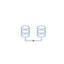
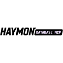
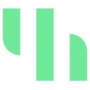
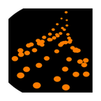
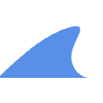
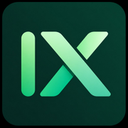
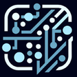
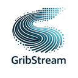
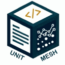

Best AI agents for data analysis (2026)
Agents that query, clean and chart data and explain what it shows. We list 240 tools for data analysis below, each with a link-checked page, pricing as the maker states it and alternatives.
Updated
240 tools: 109 open source, 1 source-available, 29 free or freemium, 15 paid, usage-based or enterprise, 86 pricing on the maker's site.
SQL and databases (91)
Scientific Agent Skills
Scientific Agent Skills, formerly Claude Scientific Skills, is K-Dense's MIT-licensed library of 177 validated Agent Skills plus connectors to more than 100 scientific databases for biology, chemistry, medicine and drug discovery; it works with Cursor, Claude Code, Codex and any agent that supports the open Agent Skills standard, and also powers K-Dense BYOK, a free desktop co-scientist that runs on your own API keys.
Added
Rushdb
RushDB is a self-describing, graph-native database that helps AI agents reason over data with confidence: progressively introspect what's queryable—without guesswork.
Added
VideoDB
A serverless video database to easily store, index, search, and stream videos. VideoDB uses AI to automatically tag scenes, generate accurate transcriptions, and quickly retrieve video moments with simple queries.
Added
OSV
Access the OSV (Open Source Vulnerabilities) database for vulnerability information. Query vulnerabilities by package version or commit, batch query multiple packages, and get detailed vulnerability information by ID.
Added
AgentFirstStack Analytics
Cookieless web analytics an agent creates and queries: goals, funnels, revenue, SQL. Free, MIT.
Added
Odoo MCP connector (Speak To Your Database)
Odoo MCP connector for Claude & ChatGPT: ask sales, invoices, stock in plain words. Read-only.
Added
Aevia
AI-powered life cycle assessment and modelling: connect to LCA databases, build and analyze systems
Added
AI for Database
Ask your databases questions in plain English, run read-only SQL and set up data alerts.
Added
Arbiter
Security checks for apps built with AI: leaked keys, open routes, database rules, each with a fix.
Added
Gagarin Cloud
Deploy and operate containers on Gagarin Cloud: services, databases, domains, logs, rollbacks.
Added
Global Database
Verified company profiles, financials, ownership, registry records and business contacts.
Added
Hostingsurge
Deploy apps, sites, WordPress and databases on Hostingsurge; read logs, add domains, migrate sites.
Added
Jam SQL Studio
Lets AI agents query SQL Server, PostgreSQL, MySQL, Oracle and SQLite via the Jam SQL Studio app.
Added
Judt
Apps and sites for your agent, with databases, storage, queues and workflows built in.
Added
LeadMCP
B2B contact database for AI agents: search, count, export and enrich 375M+ contacts.
Added
MedicineData MCP
Chinese pharma database MCP: 21 tools for drugs, targets, trials, deals, patents, sales.
Added
Mengi Cloud
Manage Kubernetes clusters, deployments, databases, secrets and observability on Mengi Cloud.
Added
Modulify
Modulify turns a text prompt into a working website or web app, such as a landing page, marketing site, dashboard, internal tool or clickable prototype, with layouts, copy, images, a CMS, a database, analytics and hosting included, and you can edit anything visually before publishing; it targets founders, marketers, designers, product managers and ops teams, has free templates and paid plans.
Added
OpenShopGraph
Open, verified shop database for AI agents: products, offers, price comparison, trust and coupons.
Added
OrionBI
Query your own databases and Data Sets with read-only SQL, and build hosted dashboards.
Added
Rock8Cloud
Deploy services, add databases, run agents, read logs, check vulnerabilities and publish pages.
Added
Surprise Buddy
What is Surprise Buddy? Surprise Buddy is a curated, country-scoped gift database exposed via a public Model Context Protocol (MCP) server. International coverage — every result is a real product page on a real marketplace (Amazon, Etsy, Mercado Libre, Otto, Bol.com, Allegro, Jochen Schweizer) and the link can be presented to the user as-is. Live MCP endpoint: https://www.surprise-buddy.com/api/mcp Exposed tools
Added
Data Api Builder
Data Api Builder is an MCP server that gives agents a way to handle REST, GraphQL endpoints and MCP tools to your Azure Databases and on-prem.
Added
ArcadeDB MCP Server
ArcadeDB MCP Server is an MCP server that gives agents a way to handle built-in MCP server for ArcadeDB multi-model database (graph, document, vector, time-series).
Added
Magic Cloud
Magic Cloud is an MCP server agents call to generate secured CRUD APIs over your database, run SQL, manage files, tasks.
Added
Uniterm
Uniterm is an open-source agent project that helps builders handle all-in-one terminal covering 30+ protocols — SSH, RDP, SFTP, databases, Kubernetes.
Added
Busabase
Busabase is an open-source agent project that helps builders handle database & workspace for AI agents — structured data, durable knowledge, reusable.
Added
phpMyFAQ
phpMyFAQ is an MCP server that gives agents a way to handle FAQ web application for PHP 8.4+ and MySQL, PostgreSQL and other databases.
Added

Db Mcp Server
Db Mcp Server is an MCP server that gives agents a way to handle multi-database server implementing the Model Context Protocol (MCP) to provide AI assistants.
Added
Airtable
Airtable is an MCP server agents call to read and write access to database schemas, tables, and records.
Added
GeoLens
GeoLens is an MCP server agents call to read-only access to a self-hosted spatial catalog: datasets, features, maps, sandboxed SQL.
Added
FlowLeap Patent AI
FlowLeap Patent AI is an MCP server that gives agents a way to handle EPO/USPTO search, citations, OCR, plus PATSTAT Portfolio Analytics, guarded SQL and Graph.
Added
Zvec
Zvec is Alibaba's open-source, in-process vector database that embeds directly in your application for low-latency similarity search in RAG and agent memory, with HNSW, IVF and DiskANN indexes, quantisation, full-text search and builds for Linux, macOS, Windows, Android and iOS.
Added
Tabularis
Tabularis is an open-source desktop SQL workspace with built-in drivers plus an MCP server so Claude, Cursor and Devin can query your databases.
Added
Talor
Talor keeps servers, databases and credentials local and lets AI agents run Talor Commands instead of receiving your passwords.
Added
Chat2DB
Chat2DB is a local-first database client where you ask questions in plain language and get SQL
Added
Teable
AI spreadsheet and database for business with built-in agents.
Added
WrenAI
Generative BI for agents: governed text-to-SQL with a semantic context layer.
Added
DBHub
Database MCP server for Postgres, MySQL, SQL Server and others from Bytebase.
Added
Postgres MCP Pro
Postgres MCP server with index tuning, explain plans, health checks and safe SQL execution for agents.
Added
Anyquery
Anyquery is one SQL interface over 60 tools, and it plugs into an LLM or agent. It lets an agent query data and explain the result in plain language.
Added
MotherDuck MCP
MotherDuck's MCP server that lets AI assistants run SQL on local DuckDB files, S3-hosted databases and MotherDuck.
Added
PrivateGPT
PrivateGPT is an Apache-2.0 API layer that turns local models into private AI applications: it speaks a Claude-style messages API and adds file ingestion, retrieval with citations and agentic RAG, built-in tools (web search, web fetch, code execution), custom tools, MCP connectors and structured access such as text-to-SQL. It does not run models itself; it connects to any OpenAI-compatible inference server (Ollama, llama.cpp, vLLM and others) and ships a workbench UI at /ui for testing.
Added
OpenViking
Context database for AI agents that keeps memory, knowledge and skills in one inspectable virtual filesystem agents can navigate.
Added
Tabby
Self-hosted AI coding assistant that offers an on-premises alternative to GitHub Copilot with no database or cloud service required.
Added
Chroma
Open-source search and vector database widely used for agent memory and RAG.
Added
Dbx
25 MB lightweight cross-platform database client for 100+ databases, including MySQL, PostgreSQL, SQLite, Redis, MongoDB, DuckDB, SQL Server, and Dameng. Built-in AI, MCP Server, CLI, desktop and Docker.
Added
Memori
An LLM-, database- and framework-agnostic memory layer that turns what agents do and say into structured, persistent state they can recall in later runs. Open source to self-host, or use Memori Cloud with an API key.
Added
MCP Toolbox for Databases
Open-source MCP server from Google for connecting agents to databases.
Added
Nightingale
Nightingale is a self-hosted alerting system with a built-in AI agent for metrics, logs, and databases
Added
InsForge
Open-source backend platform that gives coding agents a database, auth and storage.
Added
txtai
All-in-one Python framework for semantic search, LLM orchestration and agents built on an embeddings database of vector, graph and relational indexes.
Added
LanceDB
Open-source multimodal vector database for search, RAG and agent memory.
Added
Activeloop
Deep Lake, a multimodal database for AI that stores vectors, images, text and video so agents and RAG apps can search and retrieve them.
Added
Greptimedb
The open-source observability database. One columnar engine for metrics, logs, and traces, on object storage
Added
Baserow
No-code platform for databases, apps, automations and AI agents, an Airtable alternative available as cloud or self-hosted.
Added
OB1
Open Brain — The infrastructure layer for your thinking. One database, one AI gateway, one chat channel — any AI plugs in.
Added
Memgraph
In-memory graph database used as the graph layer for GraphRAG pipelines and agent memory, with Cypher queries plus vector and text search.
Added
Oracle AI Developer Hub
Technical resources for AI developers to build applications, agents, and systems using Oracle AI Database and OCI services
Added
CodeGraphContext
MCP server and CLI that index local code into a graph database so AI assistants can query code relationships.
Added
OpenScience
Research agent workbench that reads the literature, writes and runs code and experiments and logs every step, with skills and connectors for databases like PubMed, UniProt and arXiv.
Added
seekdb
AI-native search database for agent storage combining vector, text and structured data.
Added
Supabase MCP
Supabase's MCP server for managing databases, migrations and projects.
Added
AOCI-CODE
AOCI-CODE keeps a persistent, Git-versioned map of your whole codebase and database schema that your coding agent writes and a local MCP server governs. Agents in Codex, Claude Code, Cursor or OpenCode read the map once and know what each file is for, what it depends on and what must not break, instead of re-reading the repo on every task. It can index an existing codebase of up to about half a million lines and report how well it knows each area before taking over development.
Added
Erd Editor
Design database schemas as ERDs in your browser, VS Code, JetBrains IDEs or Obsidian. Import SQL, DBML and GraphQL, export DDL and code, and let coding agents edit live over MCP
Added
Qdrant MCP Server
Official Qdrant MCP server that lets agents store and retrieve memories and documents in the Qdrant vector database.
Added
Duckle
Open-source ETL/ELT you deploy on your own servers or cloud. Built on DuckDB: no-code/low-code visual pipelines or SQL, 385 components, dbt, CDC, data quality, reverse ETL, lineage, MCP for AI agents.
Added
IDA MCP (Hex-Rays)
IDA MCP is Hex-Rays' official MCP server for the IDA disassembler and decompiler. It lets AI coding agents and people work on the same IDA databases at the same time, so an agent can inspect functions, types and decompiled code, rename and annotate, and coordinate analysis across several related binaries in one session. It works with the IDA GUI through a plugin or headless through idalib, installs with Hex-Rays' hcli tool, and needs IDA 9.4 or later.
Added
Talorys
Free personal AI assistant that deploys with one command (npx create-talorys) into your own Cloudflare account, with no server, database or account run by its developers. It chats with streaming replies, keeps editable long-term memory, manages tasks, notes and projects, and runs scheduled reminders and routines. MIT.
Added
Mysql MCP Server
A Model Context Protocol (MCP) server that enables secure interaction with MySQL databases
Added
MongoDB MCP Server
MongoDB's official MCP server for querying databases and managing Atlas.
Added
Wisp Science
Wisp Science is an open-source, local-first AI research workbench for scientists on Windows, macOS and Linux. Its agent searches the literature, runs persistent Python and R kernels on your laptop or remote servers, queries about 80 scientific databases and loads reusable skills, while keeping figures, runs, decisions and drafts together in one project. You bring your own OpenAI-compatible or Anthropic model, or drive Codex or Claude Code, and approval gates stay on by default.
Added
ClickHouse MCP
Official ClickHouse MCP server for querying and exploring ClickHouse databases.
Added
PGX
Lightweight Postgres-compatible database written in Rust that gives every coding agent its own disposable Postgres: one runtime hosts thousands of isolated databases, installs as a Claude Code plugin or Agent Skill.
Added
Keboola MCP Server
Keboola's official MCP server lets AI assistants and coding agents work with a Keboola data project: browse storage tables and buckets, read and write SQL transformations, run and debug jobs and components, and build data flows from a chat. It can run locally or as Keboola's hosted remote server, with access scoped to the project token or OAuth sign-in you grant.
Added
Appwrite MCP
Appwrite's official MCP servers, so agents can manage Appwrite databases, users, storage and functions and look up Appwrite docs while building your backend.
Added

Haymon Database MCP
Single-binary open source MCP server that connects Claude, Cursor, VS Code and other MCP clients to MySQL, MariaDB, PostgreSQL and SQLite, with built-in PII redaction and write prevention.
Added
OMOPHub
OMOPHub is a hosted MCP server (mcp.omophub.com and npm @omophub/omophub-mcp, MIT) and REST API for OHDSI OMOP standardized medical vocabularies, giving AI agents and healthcare developers instant access to 11M+ clinical concepts and 63M+ relationships across SNOMED CT, ICD-10, LOINC, RxNorm and CPT without hosting a local vocabulary database.
Added
PlanetScale MCP
PlanetScale's MCP server for databases, branches, schemas and query insights.
Added
AskYourDatabase
Chat-with-your-database tool that answers natural-language questions over Postgres, MySQL, BigQuery, Snowflake and more with SQL and charts.
Added
Base44
AI app builder that turns a plain-language idea into a working web app with database, login and hosting included.
Added
ChatAcademia
ChatAcademia is a set of AI research agents for academics. Its agents search many scholarly databases, pull insights out of papers and help with each step from forming an idea to drafting a publication, and a desktop app can work directly with the research documents on your own computer.
Added
Fabi.ai
Discontinued: the AI data analysis platform that combined SQL, Python and AI shut down in 2026 after its team joined Omni (announced May 26, 2026); app.fabi.ai now shows a shutdown notice.
Added
Jason AI
Reply.io's AI SDR agent that runs personalized outreach and books meetings using its prospect database.
Added
Kuration AI
Builds and maintains your own B2B database with AI agents that pull from registers, trade shows and maps.
Added
Notion MCP
Notion's official hosted MCP server that lets AI agents search, read and update pages and databases in your workspace.
Added
RocketReach MCP
RocketReach's MCP server for looking up verified work emails and phone numbers from its contact database.
Added
SimpleBackups MCP
The official SimpleBackups MCP server lets AI assistants such as Claude, Cursor and Codex manage your backups. From a chat you can check the status of server, database and storage backups, dig into failed runs and set up or automate backup jobs on your SimpleBackups account.
Added

Streamkap MCP
Streamkap's official CLI and MCP server let AI agents manage real-time change-data-capture pipelines on Streamkap. An agent can create and edit sources, destinations, pipelines and transforms, check their status and troubleshoot lag, streaming database changes into warehouses and apps without clicking through the console.
Added
TableThis
TableThis is a shared database and Markdown docs workspace for internal apps built with Claude or Codex over MCP, with access control and review-and-undo for AI changes.
Added
Tofu
Puts apps made with Claude Code, Codex, Cursor and other coding agents online from one pasted message: hosting, a managed database, custom domain, Google sign-in, user emails and analytics in a single account. Free.
Added
MCP servers (42)
AdAdvisor MCP Server
Query Meta Ads performance data — accounts, campaigns, ad sets, ads, metrics & settings.
Added
Kinescope MCP Server
Kinescope MCP Server — Integrates Kinescope's video platform with AI assistants via the Model Context Protocol. Manage videos, access analytics, control live streams, and automate workflows through natural language. Upload, organize, update metadata, view performance metrics, and manage playlists without leaving your AI assistant. Useful for content creators, media teams, and developers who want to streamline video
Added
menjometre
Menjometre is an independent observatory of Catalan public spending. This MCP server gives any LLM client read-only access to the full dataset and the statistical scoring layer built on top of it. Coverage - ~19.5 M grant records from the Registre d'Ajuts i Subvencions de Catalunya (RAISC), 2016–present - ~1.7 M public procurement contracts from Dades Obertes de Catalunya - ~496 K beneficiary entities with
Added
Parse Mcp
Hosted MCP server for AI brand visibility research. Search brands, prompts, and dataset stats across Parse's AI visibility index covering ChatGPT, Google AI Overviews, Perplexity, Copilot, and more.
Added
TradingMCP
TradingMCP is an MCP server that gives agents a way to handle market analysis for AI assistants: screeners, multi-timeframe analysis, backtests, in-chat charts.
Added
Flint Chart
Flint Chart is an MCP server that gives agents a way to handle flint is a visualization language that lets AI agents reliably create expressive.
Added
Semiotic
Semiotic is an MCP server that gives agents a way to handle verified React chart generation: select, validate, repair, render, and inspect charts through.
Added
Oxynote
Oxynote is an MCP server that gives agents a way to handle team docs with live Prometheus charts.
Added
Notebooklm Skill
Notebooklm Skill is an MCP server that gives agents a way to handle notebookLM does the research, Claude writes the content.
Added
Hull
Hull is an MCP server that gives agents a way to handle incredible - Helm Uniform Layer Library - is a Helm library chart.
Added
SemanticOps MCP (for Power BI)
SemanticOps MCP (for Power BI) is an MCP server that gives agents a way to handle power BI MCP server (Supports Windows and macOS).
Added
NotebookLM MCP
NotebookLM MCP is an MCP server that gives agents a way to handle google Gemini Notebook (ex NotebookLM) over MCP + a local REST API.
Added
Microcharts
Microcharts is an MCP server that gives agents a way to handle find, wire, and render — word-sized React charts with generated alt text.
Added

MCP Analytics
MCP Analytics is an MCP server that gives agents a way to handle statistical analyst in your AI chat: bring data and a question, get.
Added
DC Hub
DC Hub is an MCP server that gives agents a way to handle data center energy, electricity & power grid data: DCPI to query.
Added
Savvly Mcp
Savvly Mcp is an MCP server agents call to query fund data, model projections, and compare against alternative retirement products.
Added
EximAgent
EximAgent is an MCP server that gives agents a way to handle AI sales team for export-import: outbound prospecting, trade data analysis, HS codes.
Added
Scigantic
Scigantic is an MCP server agents call to search public scientific datasets and read schema cards that describe their files.
Added
ChartQuery
ChartQuery is an MCP server agents call to generate chart images, diagrams, barcodes, QR codes and thermal labels on demand.
Added
Index One
Index One is an MCP server agents call to query financial index data, run backtests, and deploy systematic investment strategies.
Added
MEX
MEX gives engineers and their coding agents shared project memory stored as Markdown in a .mex folder that travels with Git, with a local hub for people, CLI and skills for Claude Code and Codex, an MCP server and checked statechart explanations.
Added
Está no Ir for Bots
Está no Ir for Bots is the machine-readable companion of a Portuguese travel notebook, publishing short 1 to 3 day European trips by train, boat, plane and on foot through a remote MCP server and a read-only A2A endpoint for AI agents (content only, not a booking agency).
Added
Power BI Modeling MCP
Microsoft's MCP server that lets agents build and edit Power BI semantic models.
Added
draw.io MCP
The official draw.io MCP server, so Claude, ChatGPT, Cursor and other assistants can create and edit flowcharts, architecture diagrams and other draw.io diagrams right in the chat. Free and needs no sign-in.
Added
MCP-UI
SDK that lets MCP servers send interactive web components such as forms, charts and buttons that chat hosts render inside the conversation.
Added
AntV MCP Server Chart
MCP server from AntV that lets agents generate more than 25 chart types.
Added
Excel MCP Server
MCP server that lets agents create and edit Excel files with formulas and charts.
Added
MCP Apps
Official spec and SDK for MCP Apps, the standard for interactive UIs like charts and forms that MCP servers render inside chat clients.
Added
Jupyter MCP Server
Datalayer's MCP server that lets AI agents connect to and manage Jupyter notebooks in real time, local or hosted.
Added
Alpaca MCP Server
Alpaca’s official MCP Server lets you trade stocks, ETFs, crypto, and options, run data analysis, and build strategies in plain English directly from your favorite LLM tools and IDEs
Added
Open Analytics
Open Analytics is an open-source, cookieless alternative to Google Analytics with realtime visitors, funnels and revenue attribution from one lightweight script, and no consent banner needed. It includes an MCP server, so an AI agent can query your traffic and conversions directly, and you can self-host it or use the hosted version.
Added
Hugging Face MCP Server
Hugging Face's MCP server connecting agents to the Hub's models, datasets, papers and Gradio Spaces.
Added
Amplitude MCP
Amplitude's MCP server for searching and analyzing product analytics data from an agent.
Added
FiftyOne MCP Server
Voxel51's MCP server and skills that let AI agents load, explore, curate and evaluate computer vision datasets and run FiftyOne operators and the App from natural language.
Added
Whimsical MCP
Whimsical's MCP server for creating and editing flowcharts, mind maps, wireframes and docs, or searching your workspace.
Added
Pangolinfo Amazon Data MCP
Pangolinfo Amazon Data MCP is a hosted Streamable HTTP MCP server (mcp.pangolinfo.com/mcp) and MIT-licensed stdio bridge that gives AI agents 19 read-only tools for live Amazon product search, reviews, seller catalogs, category metrics, WIPO design-patent checks and Google Trends research.
Added
AppsFlyer MCP
AppsFlyer's hosted MCP server that lets AI assistants analyze your mobile attribution and campaign performance data.
Added
CARTO MCP
CARTO's MCP server for querying data warehouses, running spatial workflows and rendering maps from your CARTO workspace.
Added
Dune MCP
Dune's official remote MCP server: agents search on-chain datasets, write and run DuneSQL, fetch results and build charts across 100+ chains.
Added
Parse.ly MCP
Parse.ly MCP server for querying content analytics such as top content, referrers, campaigns, trends and real-time data.
Added
Polar Analytics MCP
Polar Analytics MCP server that gives AI assistants commerce data from Shopify, Amazon, ads and Klaviyo with shared metric definitions.
Added
Supermetrics MCP
Supermetrics MCP server for discovering marketing data sources and fields, running queries and managing campaigns.
Added
Tracing and observability (13)
GitHub Analytics MCP — Repo & Trend Research
Repo statistics, trending lookups, code-search queries, and dev-trend aggregation. For AI agents that need to evaluate libraries, monitor competitor projects, or surface emerging open-source tools. Distinct from the Developer Tools MCP — this one is GitHub-specific and goes deeper on repo analytics.
Added
Options Analytics
Real-time options analytics MCP server. 23 tools covering gamma/delta/vanna/charm exposure (GEX/DEX/VEX/CHEX), dealer positioning, 0DTE analytics, volatility surfaces, SVI parametrization, arbitrage detection, variance swaps, VRP dashboard, Black-Scholes greeks, IV solver, Kelly criterion sizing, option quotes, historical tick data, and key options levels for US equities. Streamable HTTP transport, API key auth.
Added
Privatrak
Ask your website analytics in plain language and set up funnels, features and dashboards.
Added
Wellness Pulse
Wellness Pulse MCP is a plug-and-play intelligence layer that transforms raw wellbeing data into clear, actionable insights for AI systems. With a single integration, your copilots, agents, and dashboards gain access to trusted public benchmarks (CDC PLACES) and live institutional wellness signals — no analyst required. 🔗 Website: https://wpulse.org 🧠 What It Does 📊 CDC mental health benchmarks by ZIP or county 🏢
Added
Saiku
Saiku is an open-source semantic layer that serves Excel, dashboards, and AI agents over MCP
Added
Grafana MCP
Grafana's MCP server giving agents access to dashboards, data sources and incidents.
Added
BoardUI
BoardUI is a React design system for building agentic products and data-heavy dashboards, with 85 components and blocks (including chart cards), Tailwind CSS styling and fully editable source. The free set ships with a working AI chat app example, and Pro templates add ready-made layouts, so teams can put a polished interface on an agent quickly.
Added
SigNoz MCP Server
Official SigNoz MCP server that lets AI agents query metrics, traces and logs in natural language, investigate alerts and manage dashboards, alert rules, saved views and notification channels, for both SigNoz Cloud.
Added
Axiom MCP
Axiom's MCP server for listing datasets and schemas and running APL queries for log exploration and monitoring.
Added
ClicData MCP
ClicData's MCP server connects its data platform to AI assistants such as Claude and ChatGPT. You ask about churn, revenue or pipeline in plain language and get real analysis, live charts and full dashboards built from the governed business data you already keep in ClicData, which suits mid-sized teams without a data engineering group.
Added
Geckoboard MCP
Geckoboard's MCP server for querying live metrics and data lists from the business tools connected to your dashboards.
Added

GrowSurf MCP
GrowSurf's official MCP server lets AI assistants build and manage referral and affiliate programs in GrowSurf. An agent can set up a draft program, adjust rewards and pull participant and referral data for you to review, without clicking through the dashboard.
Added
Picsellia MCP Server
Official MCP server for Picsellia's computer vision MLOps platform, giving AI assistants access to datasets, experiments, models, deployments and monitoring.
Added
RAG and documents (12)
SML URL to Markdown API
ScriptMasterLabs' URL to Markdown API turns any public HTTPS page into clean, LLM-ready Markdown for AI agents and RAG pipelines; there is no account or API key, each accepted read costs 0.001 USDC on Base via the x402 protocol, failed reads are free, and a $2 card pack of 200 reads covers developers without a wallet.
Added
AnythingMD
Convert PDFs, Office files, spreadsheets and images to clean Markdown, sized for agent context.
Added
Boolfy Agents
Query AI-extracted invoice and receipt data, documents and suppliers from Boolfy Agents.
Added
Defi Intel
Operator-grade DeFi intelligence MCP. - 10 tools vs DefiLlama's basic 4, - adds governance proposals, - RWA attestation scores, - live X/Twitter narrative. - No enterprise subscription - and a one-call operator brief that compiles TVL + yields + stablecoins + governance + market narrative into a single NotebookLM-ready document. Sources: DefiLlama, rwa-attest, gov-scout, Grok x search. Built for DeFi researchers
Added
Klaaro
Query Klaaro datasets, documents, and extracted records from any agent.
Added
OVRSEA Shipments
Query your OVRSEA freight: shipments, quotations, documents, tasks, and reporting analytics.
Added
Exstruct
Exstruct is an MCP server that gives agents a way to handle conversion from Excel to structured JSON (tables, shapes, charts) for LLM/RAG pipelines.
Added

ImageToExcel
ImageToExcel uses AI OCR to turn photos, screenshots, scanned documents and PDFs that contain tables into editable Excel spreadsheets, keeping rows and columns intact, with extra tools for image-to-text and finance documents such as statements and invoices.
Added
PPT Master
PPT Master is an MIT-licensed tool that turns documents or topics into native, editable PowerPoint decks with real shapes, transitions and animations, data-backed charts and tables, audio narration from speaker notes, and support for your own .pptx templates. It can read PDFs, Word files and web pages, structure the narrative and write a .pptx you can keep editing in PowerPoint; v6.9.0 shipped Nov 8, 2026.
Added
LobsterAI
NetEase Youdao's desktop agent for data analysis, slides, documents and web research.
Added
Lucid MCP
Lucid's MCP connector for creating, searching, editing and sharing Lucidchart and Lucid documents from AI tools.
Added
Avora
Avora is a clinical documentation agent for dental practices that drafts notes and perio charts
Added
More tools (82)

Mulmoclaude
Nurture your own AI assistant on your own computer. Local-first and MIT: memories, data and apps stay as plain files in your workspace. Chat summons the right GUI — wiki, spreadsheet, chart, form, 3D. Build small apps for an audience of one, no programming required.
Added
Notebook Intelligence
A JupyterLab extension supporting Claude Code, Copilot, Ollama, and OpenAI-compatible LLMs, with MCP, skills, plugins, and notebook agents.
Added
Congress
Query and reeason about legislative data from Congress.gov
Added
AppmanAi
App Store & Google Play data for ASO: keywords, rankings, charts, reviews in 100+ countries.
Added
ApexCharts
Generates and validates configs for ApexCharts charts, grid, gantt, tree, sankey, stock and maps.
Added
FateTell
Deterministic BaZi (Four Pillars) charts, Chinese almanac and saved FateTell charts.
Added
Netwrix
A FastMCP-based server for Netwrix Access Analyzer data analysis, designed for enhanced data analysis capabilities.
Added
ADITUS Developer Portal MCP
Read-only docs for the ADITUS event-technology APIs (ticketing, access, BI) and Shop Micro Frontend.
Added
Alphanume Datasets
Point-in-time US equity & options data: vol premium, earnings moves, dilution, FDA events, splits
Added
AppGoat
App Store and Google Play data: apps, reviews, keywords, charts, competitors, ASO playbooks.
Added
ASOClimb
App Store Optimization: keyword ranks, autocomplete, competitors, top charts and niche analysis.
Added
Auspice BaZi — Four Pillars Chart
Cast a BaZi (Four Pillars) chart with true solar time, plus a reflective personality sketch.
Added
autario
autario is data app infrastructure: your tools and thousands of public datasets in one normalized layer, with the data apps that run on top of it. Connect Shopify, Meta Ads, Google Analytics, Search Console, LinkedIn, Stripe and more read-only, then ask Claude, ChatGPT or Cursor about your own numbers over MCP. No code, no export. How it works 1. Connect a service at https://autario.com/connectors. Each connector
Added
Ciro Cesar Maciel — Free Tools
Free, no sign-in: web page to Markdown, CSV to chart, text to speech, time zones and passwords.
Added
Coin Railz
63 x402 micropayment services via USDC — crypto analytics, trading signals, NASA/ESA satellite data, IoT sensors, AI inference, and prediction markets. Coinbase AgentKit compatible. Pay per call with prepaid credits or native on-chain USDC.
Added
Cosmic Chemistry
Free Vedic astrology: birth chart, dasha, Sade Sati, Saturn return, panchang, planetary hours.
Added
Danu Astrology
Real natal charts for you and your people: compare charts, map your Circle, see your week.
Added
DejaBars
Find historical chart-pattern matches across crypto markets from a sketch.
Added
e3d.ai
Blockchain analytics and AI agent platform for Ethereum. Query live token prices, on-chain stories, investment theses, and the E3D autonomous agent system — all backed by real-time indexed data. Works anonymously at the free tier (100 req/day). Add an API key from e3d.ai/api for higher rate limits. Tools include: - Token prices, gainers/losers across 30m / 1h / 24h / 7d / 30d - On-chain stories and structured
Added
Financial Datasets
Structured, real-time stock market data for 27,000+ active and delisted U.S. tickers.
Added
Flett
A shared whiteboard: draw diagrams, docs, slides, charts and maps on boards people edit live.
Added
fyndling
fyndling-mcp Built for medieval market fans, reenactors, and living-history enthusiasts — and the AI assistants that help them plan. Fyndling MCP gives AI clients direct access to two niche European datasets: - Medieval events — query 2,000+ markets, concerts, castle experiences, and living-history events across 20 European countries by location + radius + date range (updated weekly) - Permanent POIs — meaderies
Added
GitDealFlow Signal
GitHub-derived engineering acceleration signals for VC deal flow — surface stealth startups before TechCrunch covers them. Weekly-refreshed dataset of 109 startups across 20 sectors (AI/ML, Dev Tools, Infra, FinTech, +16 more), ranked by 14-day commit velocity change, contributor growth, and repo signal. Free tools (no API key): - get trending startups — Top 20 across all sectors - search startups by sector —
Added
Google Analytics (unofficial)
Connect Google Analytics to ChatGPT. Query GA4 data in plain English and get instant insights.
Added

GribStream MCP
Hosted weather data MCP for discovery, validation, and OAuth-protected GribStream queries.
Added
iAeternum
Intelligence Aeternum — AI training dataset marketplace with 100,000+ museum artwork images with 4K token .json metadata. Search, preview, and purchase curated art datasets with provenance tracking. Powered by x402 USDC micropayments.
Added
Invoice Table
Review invoice records, flag duplicates, validate totals, and prepare spreadsheet-safe CSV.
Added
Leapio
Query your Leapio analytics, companies, and revenue from any AI assistant, and run your actions.
Added
Lexpad
Your vocabulary notebook: save, browse, edit and practise your own words with spaced repetition.
Added
LiveDataLink
Over 2 million indexed public records. One MCP endpoint. LiveDataLink is a hosted Streamable HTTP MCP for source-linked public data, with 294 tools across 60 domains. Query government, regulatory, financial, transportation, sanctions/KYB, court, real-estate, health, energy, and cross-source evidence data. Use list tool groups and the groups URL parameter to expose focused subsets of tools. Endpoint
Added
LSTuvi
Vietnamese Tử Vi charts, lunar calendar, good-day finder and age compatibility. Free, no sign-in.
Added
Lunonis Astrology
Birth charts, synastry and birth-place search from an ephemeris. Free, read-only, nothing stored.
Added
Lyssna
Query and summarize research data across tests and surveys
Added
Metrifyr
Query Google Analytics 4, Search Console, GTM & AdSense with natural language from MCP clients.
Added
Murkuz SEO
Query your Google Search Console, GA4 and Bing Webmaster data across every site you run.
Added
Mystic Timing BaZi
Chinese BaZi (Four Pillars) birth charts, yearly outlook and compatibility. No auth, read-only.
Added
Naelos.ai
Astrology charts, transits and eclipses from NASA JPL data, 13,200 BC to AD 17,191. Free, no key.
Added
NatalChart.AI Astrology
Swiss Ephemeris astrology: natal charts, transits, synastry, solar returns and astrocartography.
Added
OndaCast
Find live radio stations, podcasts, free audiobooks, song charts and the radio guide on OndaCast.
Added
OneSignal
OneSignal is a customer engagement platform that lets you send targeted push notifications, emails, SMS, and in-app messages, manage audiences, and track campaign performance. With the OneSignal MCP, manage your messaging directly from your AI assistant. Send push notifications, emails, and SMS by simply describing your audience and message. Check campaign delivery stats, build audience segments, manage templates
Added
OXVO Insights
Read-only OXVO Insights analytics: list tracked events and run queries for one app you authorize.
Added
PatternsRadar — NSE stock screener
Screen 2,400+ NSE equities with the Sift query language over 30 years of daily data.
Added
PickTrack — DJ charts
Monthly DJ charts in 16 genres with BPM, Camelot key, track lookup and harmonic mixing matches.
Added
Ploti
US parcel, zoning, ordinance and permit data, with a Python sandbox to query and map it
Added
Polymarket Data by PolymarketScan
Real-time Polymarket analytics for AI agents. Query live prediction market data including whale trades, market odds, trader profiles, and leaderboards. Available tools: - get whale trades — large trades above a size threshold - get market odds — current prices and implied probability for any market - get trader profile — PnL, win rate, ROI for any wallet - get leaderboard — top traders ranked by PnL, ROI, or win
Added
PostData
No-signup IoT backend: device names, sensor readings, history and live charts. No API key needed.
Added
Product Pillars
Flowcharts that people and agents edit together on one live canvas, exported as Mermaid.
Added
Psilocybin Research MCP — Papers, Trials and Research Data
Free, read-only psilocybin/psilocin papers, trials, citations and verified research datasets.
Added
QueryAtlas
Query selected Google and Bing analytics, search, and advertising reports through MCP.
Added
Redstone Markets
Performance, risk, comparisons, backtests and screening for US stocks and ETFs, with charts.
Added
United States Weather
Provide real-time and forecast weather information for locations in the United States using natural language queries. Access current conditions, multi-day and hourly forecasts, weather alerts, and nearby weather stations without requiring an API key. Enable users to get official, government-sourced weather data easily through intuitive tools.
Added
Design Agent
Design Agent is an open-source agent project that helps builders handle on-brand stills, decks, diagrams, charts and motion graphics from a chat thread.
Added
GeoAgent
GeoAgent is an open-source agent project that helps builders handle multimodal AI agent for geospatial data analysis and interactive visualization.
Added
Pbi Cli
Pbi Cli is an open-source agent project that helps builders handle power BI CLI - semantic models (.NET TOM) and PBIR reports.
Added
MoZhu
MoZhu is a Chinese-language site that calculates a BaZi (four pillars) birth chart, almanac and name suggestions from your birth date with rule-based code, then adds an AI-written reading, presented as cultural entertainment rather than advice; the charts are free, with one free AI reading a day and paid deeper readings.
Added
Else
Else is a pay-per-job AI agent: hand off research questions, reports, spreadsheets or a whole website, set a spending limit, and get the finished result with an itemised receipt instead of paying a subscription or buying credits.
Added
WhoDB
WhoDB connects data access to operational intelligence so AI agents and teams can query catalogs, lineage and pipelines from one place.
Added
QuantDinger
QuantDinger is an open-source AI quant research stack for market analysis and strategy workflows that agents and researchers can run locally or in their own infra.
Added
Cube
Cube is an open-source semantic layer that lets BI tools and AI agents query the same metrics
Added
JamAIBase
JamAIBase is a collaborative spreadsheet for AI where cells chain into agent pipelines
Added
BambooAI
BambooAI is a data-analyst agent that writes Python step by step and checks its own analysis
Added
Anamap
AI analytics agent that investigates conversion and revenue changes using your data and release history.
Added
Dot
AI data analyst that answers data questions, runs root-cause analysis and sends automated reports.
Added
Hex
Analytics platform for humans and agents, with conversational analytics, notebooks and context management for data teams.
Added
Kater
AI data analyst that answers business questions from your data warehouse.
Added
Querri
AI data analyst that cleans scattered data and answers questions in plain English.
Added
Sourcetable
AI spreadsheet that analyzes data, builds models and charts from prompts.
Added
Paperclip
Self-hosted app for running a team of AI agents like a small company, with org charts, goals, budgets and approval gates across Claude Code, Codex, OpenClaw and other harnesses.
Added
DeepTutor
DeepTutor is an Apache-2.0 lifelong personalized tutoring agent from HKU DS that turns your study materials into guided explanations, practice, mastery tracking and long-term learning support. It offers a desktop app, a CLI for agent-native use, narrated video lessons, notebooks, Anki and calendar exports, and a skills community; v1.7.2 shipped Nov 6, 2026 with complete desktop downloads, selected-text speech, NVIDIA NIM embeddings and a Korean interface preview.
Added
Excelize
Go language library for reading and writing Microsoft Excel™ (XLAM / XLSM / XLSX / XLTM / XLTX) spreadsheets
Added
SurfSense
Privacy-focused, open-source NotebookLM alternative with a research agent over your sources.
Added
DeepAnalyze
Agentic LLM from Renmin University that autonomously runs data science pipelines and produces analyst-grade research reports.
Added

AutoDev
Multi-agent development platform built on Kotlin Multiplatform for research, coding, review and data queries across IntelliJ, VS Code, CLI and more.
Added
Jupyter AI
Official JupyterLab extension that connects AI agents and chat to notebooks.
Added
Bruin
Open-source, AI-powered data platform covering ingestion, pipelines and quality checks.
Added
ktx
An open-source context layer for data and analytics agents that gives Claude Code, Codex and other agents a self-improving map of your warehouse, metrics and business definitions.
Added
Datagouv MCP
Official data.gouv.fr Model Context Protocol (MCP) server that allows AI chatbots to search, explore, and analyze datasets from the French national Open Data platform, directly through conversation
Added
Superior Trade Terminal
Self-hostable AI trading terminal for Hyperliquid: sketch where you think price is going on the chart and the agent returns a rated setup with entry, stop and target, ranks alternatives and writes the Freqtrade strategy for the one you choose, refusing unsafe setups. Also offers a hosted build and a skill for agent-only trading. Apache-2.0.
Added
Dataagent
DataFoundry is an open-source AI workbench for data analysis, unifying data sources, knowledge, tools, and agent runtime into a governed workspace for interactive analytics
Added
Gemini Notebook
Google's AI research tool, formerly NotebookLM, that analyzes the sources you upload and turns them into summaries, answers and new formats.
Added
Runcell
AI agent for Jupyter notebooks that writes and runs code cells.
Added
Viso Now
Describe what a camera should watch for in plain language and it builds a live vision app with detection logic, alerts and integrations, no datasets or training needed.
Added
GitHub repos (136)
| Repo | GitHub stars | Licence | Last push |
|---|---|---|---|
| 108,842 | MIT | 2026-10-30 | |
| 71,178 | MIT | 2026-10-30 | |
| PrivateGPT ↗ | 57,620 | Apache License 2.0 | 2026-10-29 |
| 56,830 | — | — | |
| 51,307 | Apache License 2.0 | 2026-10-28 | |
| 41,191 | GNU Affero General Public License v3.0 | 2026-10-30 | |
| Tabby ↗ | 33,923 | Apache License 2.0 | 2026-06-30 |
| 29,609 | Apache License 2.0 | 2026-10-22 | |
| Chat2DB ↗ | 28,348 | a modified Apache License 2.0 for Community 5.3.0 and later (not OSI open source) | 2026-10-27 |
| 28,251 | Apache-2.0 | 2026-10-30 | |
| Teable ↗ | 21,938 | AGPL-3.0 for the core apps; MIT for the packages directory | 2026-10-28 |
| Cube ↗ | 21,133 | Apache License 2.0 for the backend and the MIT License for the client | 2026-10-30 |
| Excelize ↗ | 21,025 | BSD-3-Clause | 2026-10-29 |
| WrenAI ↗ | 18,020 | Apache-2.0 for code; CC BY 4.0 for docs | 2026-10-30 |
| 17,231 | — | 2026-09-18 |
Top 15 of 136 by stars. Stars and licence come from each repo, checked when the listing was last verified.
Related tasks
Popular with
Related searches
Tools are matched to tasks by category, use cases and what each tool says it does. Missing one? Submit it free.